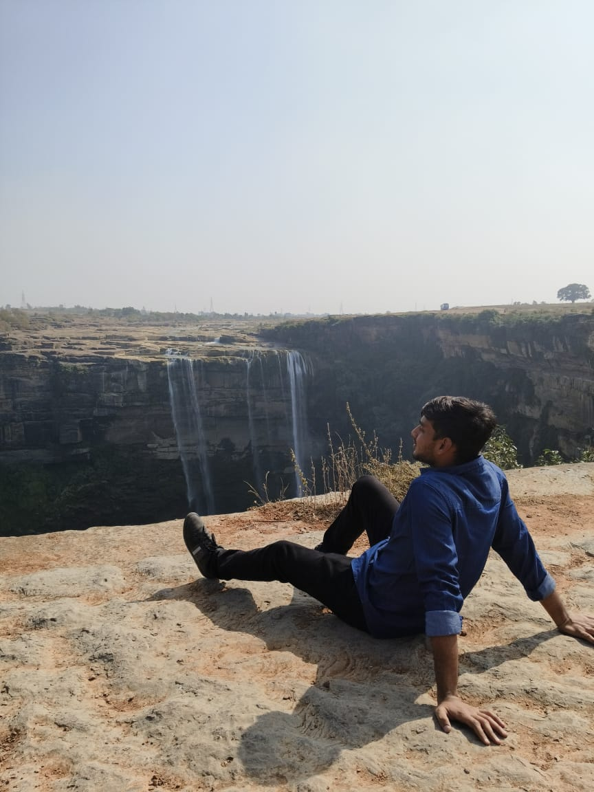

Yug's Resume
Yug Rakeshbhai Shah

About
My name is Yug Rakeshbhai Shah. I am a First Year Undergrad pursing BTech in Computer Science and Engineering from National Institute of Technology-Allahabad, Prayagraj.
I am a Passionate Learner and Hardworking person. I am Native of Surat, Gujarat and a proud citizen of India.
Education
- SSC Board Examination - 2021-22 from Bhulka Vihar Higher Secondary School, Surat, Gujarat.
- HSC Board Examination - 2023-24 from RMG Maheswari English School, Surat, Gujarat.
- JEE Mains - 2023-24 from ALLEN-Surat, Surat, Gujarat.
Work Experience
There is no professional Work Experience in IT Industry. But there is some experience in POR(Position of Responsibilities) as follows;
- Hosted, Managed and Collected Funds for 2nd Best event of our College in First Year - Rangtadi(2024-25) which is only organised by Garba Committee(Dangeraas) of our college.It was all executed with help and guidance of seniors.
- My Committee Secured 2nd rank in our College's Cultural Fest - Culrav. I being a part of Garba Committee(Dangerass) of my college and with a lot of hardwork of a month with seniors of 2nd and 3rd year and my first year colleges we secured second position out of 8 committees participating in the event.
By above two events in first year i got to learn many things as follows;
- How to work with a team
- How Events are managed and organized.
- How funds are collected and spent wisely.
- How to take permissions from respected authorites for executing the events.
- How to manage studies and personal work by working for some other activity with team.
Skills
- Have completed Full-C Language Course and CPP Basic Programming Course
- Am a Good Mathematician
- Have a good logical thinking
- Learing DSA, have knowledge of Basic Programming
- Gaining Knowledge of Web Development
- Can work on a specific task for a long time
- Have Great Hustling Skill
- Have great Communication Skill
- Quiet Good in English
Awards, Certification and Achievements
My Biggest Achievement till now is Clearing JEE Mains exam and Securing 99.8%tile in January Attempt(First Attempt) and Securing All India Rank(AIR)-3316 amoungest 14.6 Lakh people all around India.
Other Achievements are as follow,
- Got Selected in Softathalon Interview (a programing event at our college Technical's Fest - Avishkar)
- AIR 3316(99.8%tile) in JEE Mains
- Got 2 medals at Allen (one for Class Rank-1 and other for One for the Top rank at whole Institute)
- 1 time Silver Medal in Maths-Olympiad
- 2 time Bronze Medal in Maths-Olympiad
- 3 Year NCC School Certificate
- 1 NCC Camp Basic Certificate
- 4 Times Overall 1st Rank in overall school Academics and 1 Time 2nd in overall School Academics
- 90+ Marks in Elementry and Intermediate Government Drawing Examinations
- Played at District Level in Football and Chess
- Played at Taluka Level in Kho-Kho, Kabbadi and Athletics
- Having Lots of certificate in events at schools
My Hobbies
Thanks For Visiting